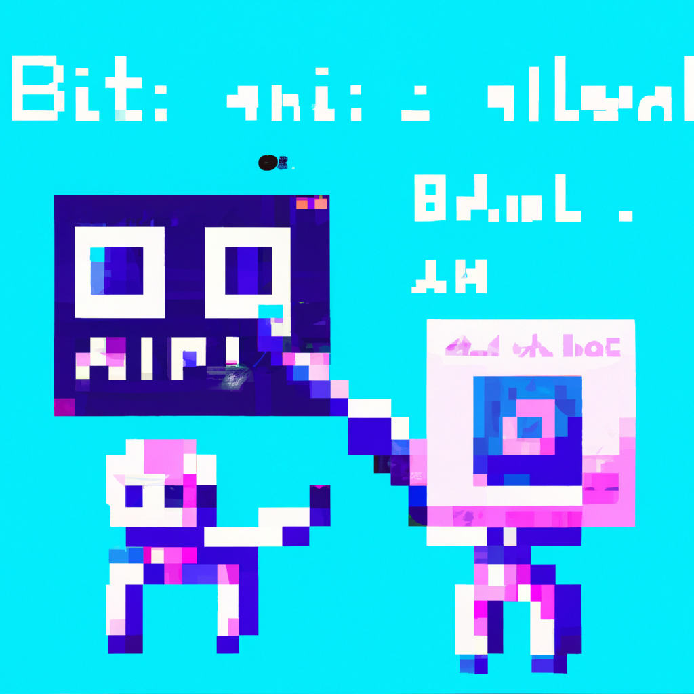

Using AI to Assist Blockchain Development
Artificial intelligence (AI) is a rapidly growing field and is beginning to have a major impact on the way we develop software. The development of AI algorithms and systems has enabled us to create more sophisticated software applications, which can be used in a variety of contexts. In particular, AI is becoming increasingly important in the development of blockchain technology.
Blockchain technology is a revolutionary new way of storing and exchanging data that is secure, immutable, and decentralized. It is being used in many different industries, including finance, healthcare, and even space exploration. AI can be used to improve the efficiency of blockchain development, making it easier to create secure applications that are resistant to malicious attacks.
AI algorithms can be used to analyze the data stored in a blockchain and identify patterns and anomalies. This can help developers identify potential security flaws and vulnerabilities in the code. AI can also be used to detect malicious activities on the blockchain, such as double spending and fraud. By utilizing AI, blockchain developers can ensure that their applications are secure and robust.
In addition, AI can be used to automate certain aspects of blockchain development. For example, AI algorithms can be used to automatically generate code for smart contracts, which can be used to enforce the terms of a transaction on the blockchain. This can save developers time and money, as they no longer have to manually write code.
Finally, AI can be used to make blockchain applications more user-friendly. By using machine learning algorithms, developers can create applications that are tailored to the user’s needs and preferences. This can make blockchain applications easier to use, leading to increased adoption and use.
AI is a powerful tool that can be used to improve the efficiency and security of blockchain development. As AI continues to evolve, it will become an even more important tool for the development of blockchain applications.